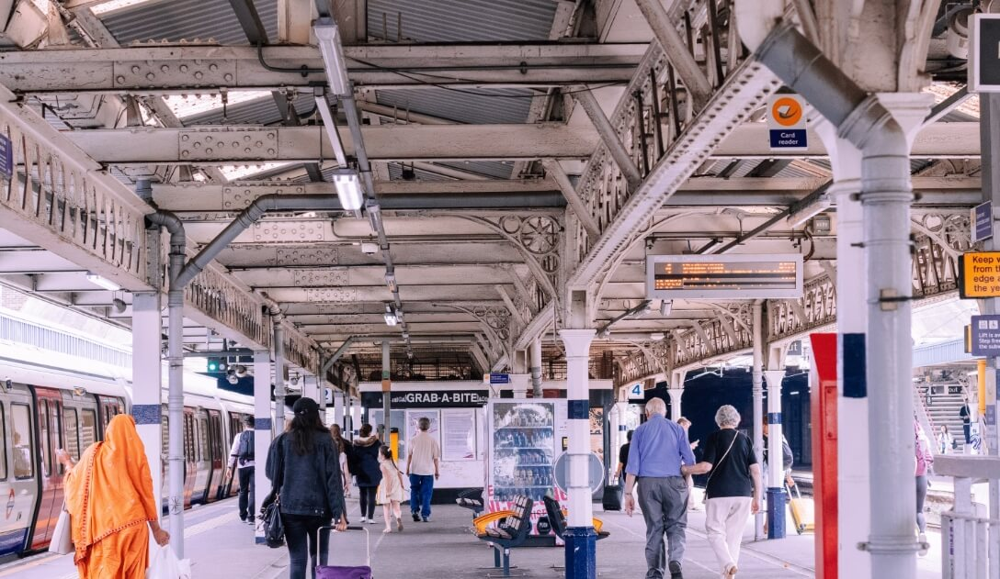

Mengenal Lebih Jauh Gaya Travelling Ala Generasi Milenial
Liputan6.com-15 Agu 2019

Liburan/jalan-jalan atau yang lebih kita kenal dengan sebutan traveling dalam Bahasa Inggris merupakan suatu hal yang lumrah dilakukan oleh manusia. Namun ada pergeseran makna dari traveling ini di masa dulu dan sekarang, di mana traveling yang tadinya merupakan kebutuhan tersier namun sekarang dianggap sebagai kebutuhan sekunder untuk sebagian besar masyarakat. Golongan masyarakat yang dimaksud dalam tulisan ini adalah masyarakat generasi millenial. Generasi millennial sendiri adalah istilah yang digunakan untuk menyebut anak muda zaman sekarang, yang hidup didominasi oleh teknologi karena perkembangan zaman yang pesat. Di era digital saat ini, traveling tidak dipandang sebagai kemewahan tetapi sebagai kebutuhan. Dengan gambar-gambar tujuan eksotis dan perjalanan petualangan yang membanjiri feeds di media sosial millenial, tidak mengherankan bahwa perjalanan telah menjadi prioritas utama bagi generasi ini.Generasi milenial dikenal sebagai generasi yang suka bertualang. Dari traveling, mereka
mendapatkan kesenangan dan pengalaman. Tak jarang juga, milenial menjadikan traveling sebagai pilihan gaya hidup.
Faktanya, generasi millenial 23% lebih banyak untuk berpergian ke luar negeri daripada individu dewasa. Milenial juga bersedia menganggarkan dana lebih banyak untuk traveling. Para peneliti menemukan bahwa sebagian besar generasi milenial lebih memprioritaskan untuk berplesir ke kota atau negara lain daripada membeli rumah atau melunasi hutang. Tidak jarang traveling menjadi suatu tujuan hidup ketika seseorang membuat rencana lima tahun ke depan.
Kira-kira tujuh dalam sepuluh milenial mengatakan mereka akan melakukan perjalanan lebih banyak jika mereka memiliki lebih banyak waktu, dan sembilan dalam sepuluh milenial mengatakan mereka akan melakukan perjalanan lebih banyak jika mereka memiliki lebih banyak uang. Ada beberapa hal yang akan penulis soroti dalam menulis gaya milenial dalam traveling, di mana mereka melakukannya dengan cara yang benar-benar baru dan tak terduga. Yang pertama tentunya terkait dengan teknologi yang semakin maju. Di mana jika membahas tentang gaya milenial dalam traveling maka tidak akan lepas dari teknologi komunikasi yaitu smartphone, internet dan media sosial.Smartphone dan internet bisa dikatakan sebagai pusat perencanaan dan alat untuk berbagi pengalaman liburan tersebut. Jika trip yang dilakukan dulu lebih sering menggunakan travel agent untuk mengurus segala kebutuhan dan perencanaan dari trip tersebut, namun generasi muda sekarang menggunakan internet dan smartphone untuk merencanakan trip mereka. Tidak lagi bergantung dengan travel agen karena keinginan generasi muda adalah untuk melakukan perjalanan trip sesuai dengan keinginan sendiri.Ke destinasi-destinasi unik yang biasanya tidak ditawarkan oleh agen travel. Destinasi-destinasi unik itu dengan mudah bisa ditemukan di Internet dan media sosial.
Ditambah lagi sekarang lebih muda untuk kita mencari informasi terkait kota atau negara yang dituju, juga semakin mudah untuk melakukan pemesanan tiket pesawat dan hotel. Sehingga saat ini tidak berlebihan jika kita katakan, jasa travel agen bukanlah suatu hal yang dibutuhkan oleh milenial. 66% dari Millennial memesan perjalanan mereka melalui smartphone dan 97% memposting di jejaring sosial dan berbagi pengalaman mereka saat bepergian.
Bicara soal traveler generasi milenial, kita juga tidak bisa lepas dari aplikasi Instagram. Tak hanya untuk upload foto, Instagram juga telah menjadi salah satu sumber referensi liburan. Menurut survey generasi milenial akan lebih cenderung berlibur ke tempat yang hits di platform sosial. Ini menunjukkan bahwa platform sosial menjadi salah satu faktor saat milineial menentukan destinasi liburan mereka.
Survey dari Dwidayatour yang dilakukan pada tahun 2018 dan diikuti lebih dari 1.700 netizen dengan rentang usia 18-35 tahun, menunjukkan bahwa Instagram menjadi aplikasi favorit traveler selama liburan. Instagram tidak hanya digunakan untuk mengunggah foto, tapi sekarang aplikasi ini juga digunakan untuk mendapatkan banyak informasi baik mengenai tempat-tempat liburan, begitu pula informasi promo-promo buat liburan.
Gaya anak muda dalam liburan zaman sekarang juga sebagian besar sangat fokus terhadap foto-foto bagus atau yang lebih sering disebut Instagram worthy. Maksudnya adalah foto-foto yang bisa di unggah dan kelihatan menarik dalam feeds yang dimiliki. Feed Instagram akan dipenuhi dengan gambar-gambar pantai yang eksotis dan pemandangan indah yang akan membuat orang iri.
Pada tahun 2016, 97% milenium menggunakan media sosial saat bepergian dan 75% memposting ke jejaring sosial setidaknya sekali sehari. Tidak terbayang di tahun ini tentunya jumlah sudah semakin banyak dan membludak. Generasi Millenial mengandalkan fakta bahwa sebuah gambar bernilai ribuan kata, menggunakan tulisan untuk menceritakan kisah mereka dan berbagi pengalaman mereka.
Mereka mungkin masih kuliah atau baru lulus atau mungkin bary bekerja. Intinya, mereka masih berada di fase awal kehidupan profesional mereka dan generasi muda menyadari bahwa pengalaman perjalanan dapat membuka mata mereka terhadap apa yang benar-benar di inginkan. Perjalanan ke berbagai tempat di dunia memiliki kekuatan untuk membantu orang menemukan diri mereka lebih mampu daripada yang pernah mereka pikirkan.
Hal-hal yang dapat membuka mata adalah apa yang ingin dimiliki milenial ketika mereka bepergian. Keinginan seperti ini juga yang akhirnya merubah destinasi wisata sebagian besar wisatawan muda, dimana tadinya negara-negara Eropa menjadi tujuan utama. Meski negara Eropa Barat dan Amerika masih menjadi beberapa destinas utama, namun saat ini destinasi wisata tujuan milenial telah berkembang.
Banyak anak muda yang ingin untuk mencoba hal baru dan memilih destinasi yang memiliki perbedaan budaya signifikan dengan tempatnya tinggal. Negara-negara di Asia dan Amerika Latin menjadi tempat yang mulai mendapat perhatian wisatawan. Gaya anak muda yang lebih tertarik untuk pergi kesuatu tempat yang memiliki perbedaan budaya lain karena mereka ingin merasakan suatu hal yang berbeda dan memiliki pemahaman lintas budaya.